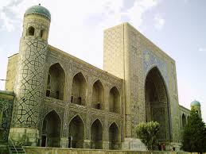
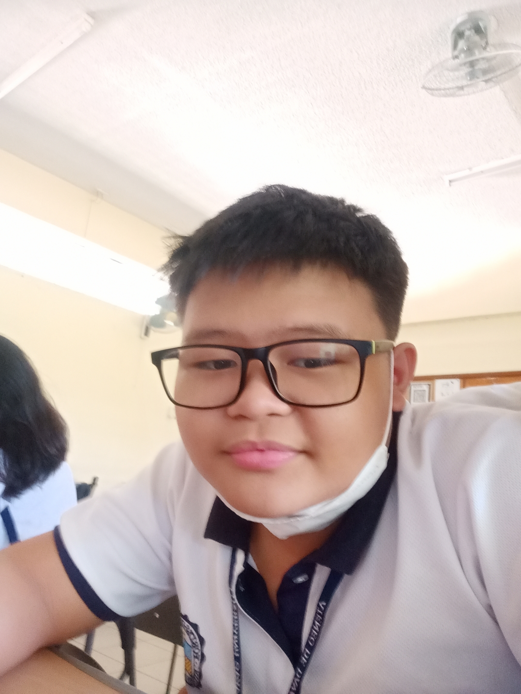

 Before COVID reigned , MADRASAH has faced other problems that affected not only those who take over it, but the students who study there as well. Thee problems are caused by the flooding of the Davao River as their location is quite near the flowing large river that is beside it. Caused by the floods that the Davao River has caused due to rainfall or even typhoons, is the broken infrastructure of MADRASAH. Natural disasters like floods , earthquakes and others , are prone to causing destruction in MADRASAH’s whole building structure. Another problem that they faced along with COVID was that of the lack of healthcare facilities. The result of the lacking healthcare facilities affect the students who come by MADRASAH to study and learn, and because of these lacking facilities, the students and officials who study and work in MADRASAH will get affected. Our proposed project can help avoid such destructive tendencies by giving funds to MADRASAH that will help them in getting the money needed.
MADRASAH is affected by these occurring problems, and since this has been going on for quite a while already ever since. From our background, we have stated about what the MADRASAH is facing and what the current state of their buildings and facilities are. Even though these problems can come from a smaller scale, it's continuous presence can affect the state of MADRASAH more and more, resulting into a destructive force. The problem is supported by natural disasters like flooding and earthquakes, and the presence of COVID-19 affected their healthcare, and its lacking number would not be able to help them all. The flooding problem can happen at anytime, but it is most likely going to occur during days where there is heavy rainfall as MADRASAH is near the Davao River. COVID however is a different case, as it happened back in December 2019 where it was first found in China. Even though COVID is not as active as it was, it is still around and everyone must be vigilant of what they do or eat.
SociaLife doesn't only share the goal of providing funds for MADRASAH, no no! In fact, the project proposal can actually be used in real life! One of these aspects is the newfound ability on how to provide funding, which can help when one is interested in accounting or when one is making commissions! This very skill focuses more on the aspect of money or rather accounting, being able to provide ways to fund as like the businesses around us. Another skill we can get from this project is how we can use social media and real life as to cooperate with a certain goal to achieve it. Its outcome; to achieve a high amount of money from funds created to MADRASAH, is so a outcome of hardwork and our strategic planning to make this proposal a reality
MADRASAH, being a school for the Muslim students to help them learn and become great citizens of Davao City, also needs the care it needs for its officers and students. MADRASAH has faced several problems now that rainfall is getting quite stronger these rainy days, along with the still active presence of the Coronavirus around the areas we are in. The problems that occur are rather based on the natural disasters that are around us, but there are solutions that can quite help. One of the recommendations I can make is to have small COVID kits (Masks, Alcohol, Vitamins, etc.) which are about 7-9 kits of them, especially with masks since COVID is yet around. A recommendation to help solve the flooding issues is using heavy bags (Sand bags, Cement bags or whatever is the best option) to help in blocking off the water from going through and breaking through. The Data that we have gathered is that Madrasah's main issue right now are COvid-19 and The flooding of Davao River which evolved into other issues like lack of healthcare facilities and infrastructure that are not fit for it location (being near Davao River).We gathered this data through our contact personnel Sir Montazer Lupon through his messenger. We also looked at map of the area that Madrasah is located which is quite near to Davao River.We find this data Important to our research because us finding ways to compost can help in lessening that compostable trash that can block pathways for water to throw. This may lead to flooding in the vicinity
Ang napapahong isyu na sa aming palagay na kailangan ng tugon sa Madrasah ay ang Flooding sa Davao river. Ayon sa aming contact personnel itong ang kanilang pangunahing isyu dahil sa location ng institusyon. dahil to location ng Madrasah ay malapit sa Davao river, at dahil dito naging mas madali na mag baha ang institusyon.
Nanaranasan namin na kailangan namin mag lipat ng bahay dahil sa sobrang lalim ng baha sa aming komunidad. Mapatunayan namin to dahil ito ay galing sa isa sa amin ka groupo. Ang kanyang komunidad ay na bahaan don early october. Ang aming solusyon na mabigay ng mga funds sa mga tao na ebekto nito at tayo ay matanim ng mga puno para bawasan ang tindi ng pag babaha.
Mapanindigan namin ang aming solusyon sa isyu na aming natalakay sa pamagitan na kami ay gumawa ng fundraiser upang among matugon ang isyu na flooding. Ang paraan na ito ay sumasali sa aming project proposal na SociaLife. Ang proyektong panukala na ito ay koneksyon sa aming solusyon na gumawa ng fundraiser dahil ang proyektong proposal na ito ay hindi lang tumutulong sa mga tao kahit tayo ay malayo. Ang proyektong panukala na ito ay hindi lang makaktulong sa pagtugon ng isyu ng flooding, pero sa pagtugon ng ibang pang problema na niraranasan ang Madrasah parin, gaya ng kanilang sira na inprasraktura kay ito parin ang bunga ng flooding sa Davao River.
 This is Roi Andrei C. Pacana, born in October 23 2007 he is one of the oldest members of Grade 9 Borgia. In being born in 2007 he is currently aged 15 2nd to the last oldest and is one of the oldest students of Ateneo de Davao University only started learning in playschool. Being part of Chess club means that he is understanding and knowledgeable of his situation in where he know how to solve problems and tasks effectively. This effects him in being a talkative and loud person since that he knows a lot of people old and new in Ateneo. In this situation he makes the right coding with trial and error and in different methods to make the best out of his part in html making.